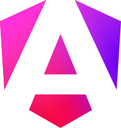

Screenshot em breve
Sistema de Gestão modelo
Espaço reservado para um sistema de gestão real: autenticação, CRUD, dashboard de dados e relatórios.
🚧 Projeto a caminho — fica atento.
// disponível para novos projetos
Desenvolvedor Front-End, UI/UX Designer
Desenvolvo sistemas de gestão e aplicações web que transformam problemas em soluções eficientes. Com foco em código organizado, desempenho e boas práticas, procuro criar software que gere valor e ofereça uma excelente experiência ao utilizador.
// 01_sobre-mim
Francisco Dos Santos Gaspar, desenvolvedor web com cerca de dois anos de experiência prática. A minha jornada na programação começou pela curiosidade, pelo interesse em tecnologia e pela vontade de criar soluções para problemas reais. Desde então, tenho evoluído através da prática, desenvolvendo projetos e procurando aprender algo novo todos os dias.
Tenho um interesse especial pelo desenvolvimento de sistemas de gestão, área onde encontro os desafios que mais gosto de resolver. No back-end, gosto de trabalhar com lógica, autenticação, bases de dados e arquitetura de aplicações. Também valorizo código organizado, desempenho, responsividade, acessibilidade e uma boa experiência para o utilizador.
Acredito que a melhor forma de aprender é construindo projetos reais. Sempre que encontro um problema, procuro primeiro compreender a sua origem, pesquisar diferentes soluções e implementar a abordagem mais eficiente. Atualmente procuro oportunidades para crescer profissionalmente, colaborar em projetos desafiantes e continuar a evoluir como desenvolvedor.
Encaro cada desafio como uma oportunidade de aprendizagem. Independentemente da dificuldade, procuro compreender o problema e encontrar a solução mais eficiente.
Evoluo principalmente através da prática, criando projetos, estudando novas tecnologias e aperfeiçoando continuamente as minhas competências.
Procuro desenvolver aplicações bem estruturadas, com código limpo, interfaces responsivas e soluções que entreguem valor ao utilizador.
// 02_stack
Ferramentas e linguagens que uso no dia a dia.

// 03_projetos
Uma seleção de trabalhos recentes.
Espaço reservado para um sistema de gestão real: autenticação, CRUD, dashboard de dados e relatórios.
🚧 Projeto a caminho — fica atento.
Espaço reservado para uma landing page de conversão: rápida, responsiva e orientada a um objetivo claro.
🚧 Projeto a caminho — fica atento.
Espaço reservado para uma aplicação web com API própria, autenticação de utilizadores e lógica de negócio real.
🚧 Projeto a caminho — fica atento.
// 04_servicos
Como posso ajudar o teu projeto a sair do papel.
Desenvolvimento de websites modernos, rápidos e responsivos, adaptados às necessidades de cada cliente e preparados para proporcionar uma excelente experiência em qualquer dispositivo.
Criação de sistemas de gestão personalizados para facilitar a organização de informações, automatizar processos e tornar o trabalho mais eficiente para empresas e organizações.
Desenvolvimento de landing pages com design moderno, carregamento rápido e estrutura pensada para apresentar produtos, serviços ou campanhas de forma clara e objetiva.
Correção de erros, atualização de funcionalidades, melhorias de desempenho e manutenção contínua para garantir que o website permaneça seguro, rápido e funcional.
Desenvolvimento de aplicações web focadas na resolução de problemas reais, utilizando boas práticas de programação, arquitetura organizada e tecnologias modernas.
// 05_processo
Um processo claro, do primeiro contacto ao lançamento.
Entendo o teu negócio, objetivos e público-alvo para definir o âmbito certo do projeto.
Estruturo a solução, escolho a stack certa e desenho a experiência antes de escrever código.
Construo com código organizado, boas práticas e atualizações frequentes sobre o progresso.
Verifico responsividade, desempenho e casos-limite antes de qualquer entrega.
Publico o projeto e fico disponível para manutenção, ajustes e evoluções futuras.
// 06_atividade
Dados reais, atualizados automaticamente a partir do meu perfil.
Projetos
Tecnologias
Horas de estudo
Clientes
// 07_faq
O que costumam perguntar antes de começar um projeto.
Avalio os requisitos, o prazo e a complexidade de cada projeto para apresentar um orçamento personalizado e sem custos escondidos, antes de começar qualquer trabalho.
Sim. Trabalho remotamente com clientes de qualquer país, com comunicação por email, WhatsApp ou chamada de vídeo ao longo do projeto.
Depende do âmbito — uma landing page pode demorar poucos dias, um sistema de gestão mais completo demora mais. Defino um prazo estimado logo após perceber os requisitos.
Sim. Fico disponível para correções, atualizações e evoluções depois do projeto estar no ar — ver secção Serviços.
HTML, CSS e JavaScript no front-end, PHP/Laravel e MySQL no back-end — ver detalhes na secção Tecnologias.
Envia uma mensagem pelo formulário de contacto, email ou WhatsApp a descrever a tua ideia — respondo com os próximos passos.
// 08_contacto
Tens um projeto em mente? Fala comigo.